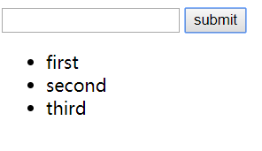
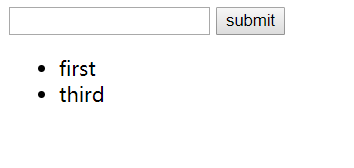

先上代码
<body>
<div id="root">
<div>
<input v-model="inputValue" />
<button @click="handleClick">submit</button>
</div>
<ul>
<todolist v-for="(item,index) of list"
:key="index"
:content="item"
:index="index"
@delete="handle"
></todolist>
</ul>
</div>
<script>
Vue.component("todolist",{
props: ['content','index'],
template: '<li @click="handleDelete">{{content}}</li>',
methods: {
handleDelete:function(){
this.$emit('delete',this.index)
}
}
})
new Vue({
el:"#root",
data: {
inputValue:'',
list:[]
},
methods: {
handleClick:function(){
this.list.push(this.inputValue)
this.inputValue=''
},
handle:function(index){
this.list.splice(index,1)
}
}
})
</script>
</body>创建todolist的基本结构
1 <div id="root">
2 <div>
3 <input v-model="inputValue" />
4 <button @click="handleClick">submit</button>
5 </div>
6 <ul>
7 <todolist v-for="(item,index) of list"
8 :key="index"
9 :content="item"
10 :index="index"
11 @delete="handle"
12 ></todolist>
13 </ul>
14 </div>在这里我们创建了一个todolist标签作为父组件，让它在里面循环遍历list作为我们的输出，同时定义了一个delete的监听事件。
接下来在script标签里定义子组件
1 Vue.component("todolist",{
2 props: ['content','index'],
3 template: '<li @click="handleDelete">{{content}}</li>',
4 methods: {
5 handleDelete:function(){
6 this.$emit('delete',this.index)
7 }
8 }
9 })定义了一个全局类型的子组件，子组件的props选项能够接收来自父组件数据，props只能单向传递，即只能通过父组件向子组件传递，这里将上面父组件的content和index传递下来。
将li标签作为子组件的模板，添加监听事件handleDelete用与点击li标签进行删除。
在下面定义子组件的handleDelete方法，用this.$emit向父组件实现通信，这里传入了一个delete的event，参数是index，父组件通过@delete监听并接收参数
接下来是Vue实例
1 new Vue({
2 el:"#root",
3 data: {
4 inputValue:'',
5 list:[]
6 },
7 methods: {
8 handleClick:function(){
9 this.list.push(this.inputValue)
10 this.inputValue=''
11 },
12 handle:function(index){
13 this.list.splice(index,1)
14 }
15 }
16 })handleClick方法实现每次点击submit按钮时向list里添加值，在每次添加之后将输入框清空。
而handle方法则是点击删除li标签，这里通过接受传入的index参数来判断点击的是哪一个li
这是删除前：

这是删除后：

总结：通过点击子组件的li实现向外触发一个delete事件，而父组件监听了子组件的delete事件，执行父组件的handle方法，从而删除掉对应index的列表项，todolist中的list对应项也会被删除掉。